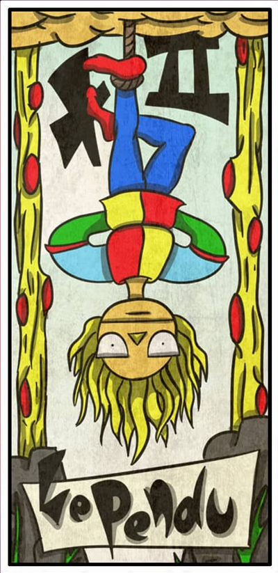
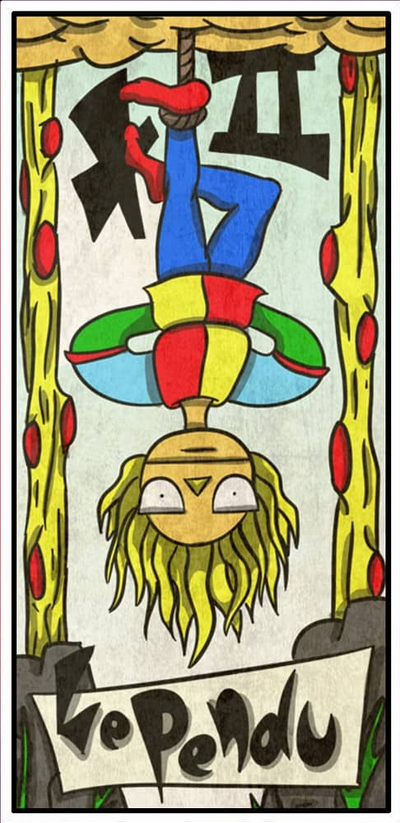

Tarot
Para hacerse alguna pregunta, leer el futuro, admirar su arte o jugar a algun juego, el Tarot lleva muchos años en nuestra sociedad.
Un conjunto de arcanos mayores para sentirse parte del mas allá o mas acá.
Para hacerse alguna pregunta, leer el futuro, admirar su arte o jugar a algun juego, el Tarot lleva muchos años en nuestra sociedad.
Un conjunto de arcanos mayores para sentirse parte del mas allá o mas acá.
 
